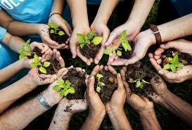
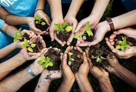

Learn more about the issues and the solutions.
Sustainability
The existing economic system is based on the deception that unlimited growth is both beneficial and sustainable. Corporations (and, in many cases, governments) gain the most from this consumer culture. This is why, via individual acts and consistent pressure on companies and key decision makers, we're addressing the practices and business models that promote this consuming culture before it's too late.
Our Mision
To show public the cause effect and the prevention of pollution. To prevent death and illness caused by toxic pollution in all forms, including air, water, soil, and chemical wastes
Society
To change the world, we must dismantle the repressive systems that prevent us from securing a green and peaceful future for everyone. Because environmental justice cannot exist without social justice, we must safeguard our democracy and reject dictatorship.
Our Vision
We envision a Philippines where the people are not afraid. Where every Filipino’s basic needs are met, and the government protects the interests and safety of the people, instead of catering to the greed of a few.
EXPLORE NOW 
